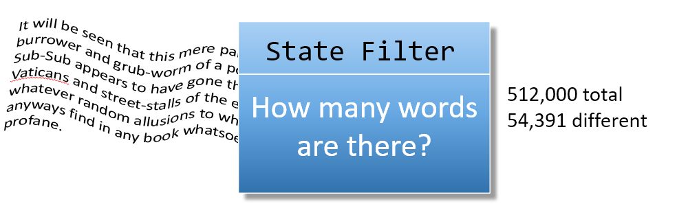

State Filters
State filters produce information by learning something about the data in a stream. State is shorthand for saying "what is the current status of this data". Characters, for instance, have values, but also belong to groups, like digit characters, alpha characters and so on.

State transitions are changes from one state to another. Most state filters work by finding the state transitions and then performing some action. Here are some uses:
- Counting the number of words in input (counting word transitions) (wc)
- Printing one sentence per line (looking for a period, question or exclamation mark)
- Compressing input (turn off echo when in blank-spaces state)
Often programs will contain both process-filter and state-filter portions. Distinguishing between process and state filters is only useful if it suggests a method of problem solving—not for its own sake.
 This course content is offered under a
CC
Attribution Non-Commercial license. Content in this course
can be considered under this license unless otherwise noted.
This course content is offered under a
CC
Attribution Non-Commercial license. Content in this course
can be considered under this license unless otherwise noted.